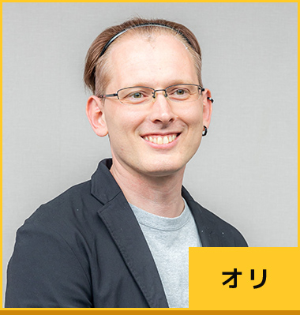
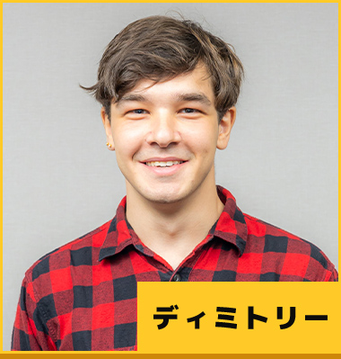
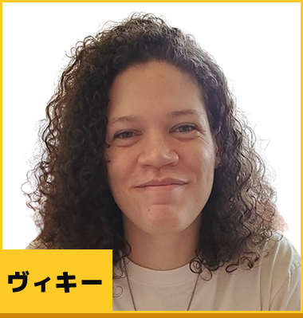

世界のプロフェッショナルから学ぶ、
アライブで培う未来を創る力
理工系の専門知識と国際教養を持つプロフェッショナルなアライブの外国人講師だからこそ伝えられる「本物の知識」と「実践力」。
多様な視点に触れることで、創造力や問題解決力が身につき、子どもたちは未来のイノベーターとして成長していきます。
理工系のプロから学ぶ3つのメリット
1.実践的な知識とスキル
理論に加え、リアルな知識や最先端技術に触れ、より深い学びへ
2.英語で考え、解決する力
「英語を学ぶ」だけでなく、英語を使って問題解決に挑戦
3.多様な視点と柔軟な思考
異なる文化・価値観を持つ講師によりグローバルな発想力を育成
-
- ニックネーム
リーダー
プラム
- 学歴
- 名古屋大学 工学部 機械航空工学科 卒業
私の好きな科学的事実
My favorite science fact is that time is relative. Imagine you zoom off from Earth in a super-fast rocket, zip around for a year, and then return. You'd actually be a bit in the future compared to everyone who stayed on Earth!
私の好きな科学の事実は、時間が相対的であることです。地球から超高速ロケットで飛び出して、一年間飛び回って戻ってくると、地球に残ったみんなと比べて少しだけ未来にいることになるんですよ。
-

- ニックネーム
サブリーダー
オリ
- 学歴
- ユニバーシティ・オブ・ザ・ピープル 卒業
- 資格
- 経営学修士, コンピューター・サイエンス理学士(120時間のTESOL/TEFL資格, 80時間TEOL認定証, 70時間TEAL認定証, 60時間TEYL認定証),
Pythonデベロッパー認定証, PHP認定証
私の好きな科学的事実
One fascinating scientific fact that is intriguing is the concept of quantum entanglement. This phenomenon occurs when pairs or groups of particles become correlated in such a way that the state of one particle instantly influences the state of another, regardless of the distance between them.
興味深い科学的事実の一つは、量子もつれの概念です。この現象は、粒子のペアやグループが相互に関係するようになり、たとえその粒子同士がどんなに離れていても、一方の粒子の状態が瞬時にもう一方の粒子の状態に影響を与えるというものなんですよ。
-
- ニックネーム
- ニワ
- 学歴
- 名古屋工業大学 工学部 電気機械工学科 卒業
私の好きな科学的事実
Bananas are radioactive.
バナナは放射能を持っています。※日常的にバナナを食べることで放射能の影響を受けることはないため、心配する必要はありませんよ。
-
- ニックネーム
- ラエル
- 学歴
- メトロポリタンメディカルセンター 博士課程修了
私の好きな科学的事実
Penguins have knees.
ペンギンには膝があるってしっていた？
-
- ニックネーム
- カーラ
- 学歴
- フィリピン大学 生物学部 卒業
私の好きな科学的事実
your DNA is so long that it can streach from the earth to the moon 1000s of times
人間のDNAは非常に長く、地球から月まで何千回も伸びることができます。
-
- ニックネーム
- マーク
- 学歴
- AMA大学 情報学部 卒業
私の好きな科学的事実
spinosarus and tyranosarus didn't get to meet each other because they lived in different eras
スピノサウルスとティラノサウルスは別の時代に生きてたから、本当は、出会うことはなかったんだよ。
-
- ニックネーム
- JB
- 学歴
- ウェストバージニア大学 (学科の情報ください) 卒業
私の好きな科学的事実
Mars has lower gravity than Earth. That means a person that weighs 200 pounds on Earth would only weigh 76 pounds on Mars.
火星の重力は地球よりも弱いんだよ。それってつまり、地球で200ポンド（約90キロ）の人が火星ではたったの76ポンド（約34キロ）しか重さがないってことなんだ。
-
- ニックネーム
- ケラブ
- 学歴
- 名古屋大学 工学部 機械航空工学科 卒業
私の好きな科学的事実
DNA can store up to 500 exabytes of data !
DNAは最大500エクサバイトのデータを保存できるんだよ～！
-
- ニックネーム
- ジェズ
- 学歴
- 名古屋大学 情報学部 自然情報学科 在学
私の好きな科学的事実
Rice's Theorem (No nontrivial semantic property of p.c functions is decidable)
ライスの定理です。（部分再帰関数の非自明な意味論的性質は決定可能ではない、ということです。）※ある種の複雑な性質については、それが本当に成り立つかどうかをコンピュータを使って完全に判定することは不可能、ということです。
-

- ニックネーム
- ディミトリー
- 学歴
- 名古屋大学 理学部化学科 卒業
私の好きな科学的事実
I'm impressed by the fact that mirror images of the same organic molecule can be one a medicine and another a poison. Nature's complexity is inspiring, but it also demands caution and respect.
同じ有機分子の鏡像が、薬にも毒にもなるっていう事実に感動しちゃうよね。自然の複雑さは本当に驚くべきだけど、同時に慎重さと敬意が必要だね。
-
- ニックネーム
- ディミトリー
- 学歴
- 名古屋工業大学 工学部 在学
私の好きな科学的事実
If you put 1 of every animal in a bag and then pick one out you have a 1/5 chance in picking a beetle
動物を1匹ずつ袋に入れてその中から1匹を選んだ場合、カブトムシを引く確率は5分の1、ということです。※つまり、全ての動物の中でカブトムシが占める割合が20%（5分の1）ということですね！
-
- ニックネーム
- ハオ
- 学歴
- 名古屋大学 大学院 国際開発研究科 博士課程在学
私の好きな科学的事実
Diamond is actually carbon under high pressure.
ダイヤモンドは、実際には高圧下の炭素である、ということです。※ダイヤモンドは、特定の環境条件で炭素が変化したものにすぎないよ、という意味です。
-

- ニックネーム
- ヴィキー
- 学歴
- 名古屋大学 工学部 機械航空工学科 卒業
私の好きな科学的事実
Supernova explosions can create something called "galactic fountains" hehe :) It's so appropriate for what it looks like :)
超新星爆発は『銀河の泉』って呼ばれるものを作ることがあるんだよね、へへ :) まさに見た目通りって感じだよね :)